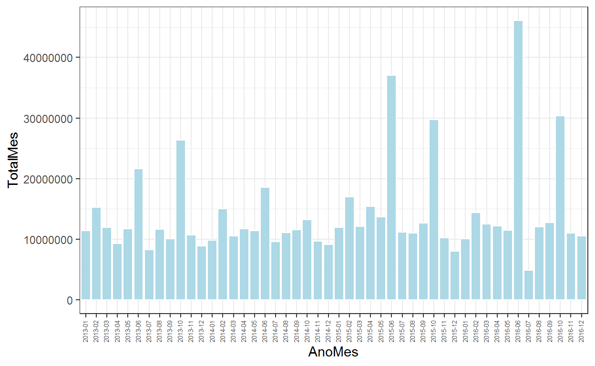
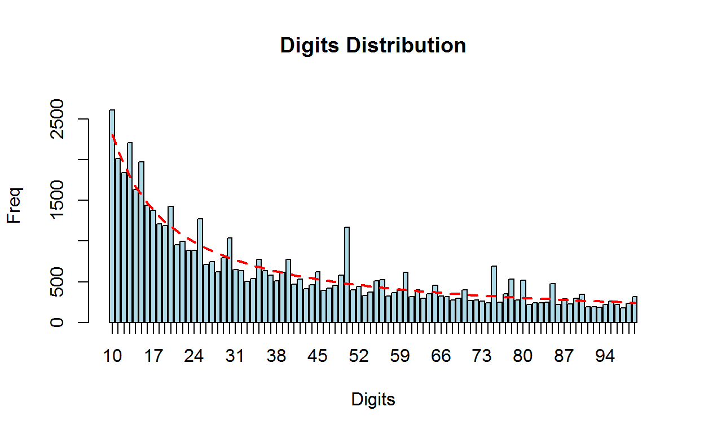
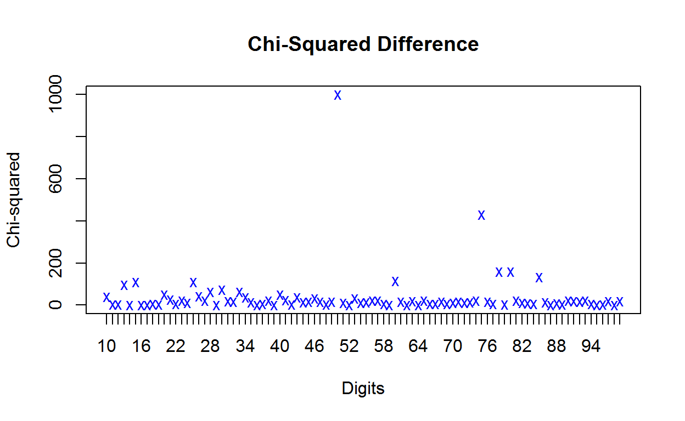
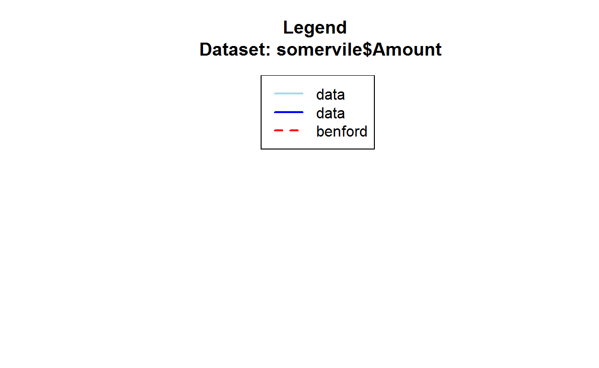
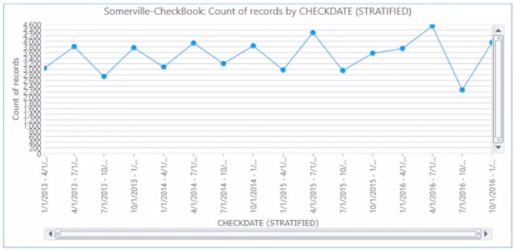
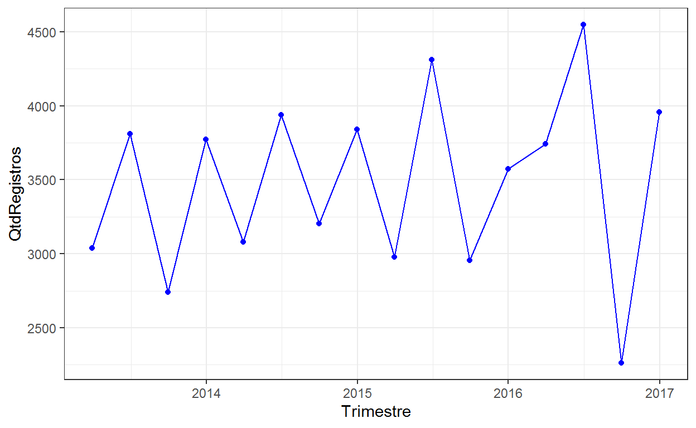
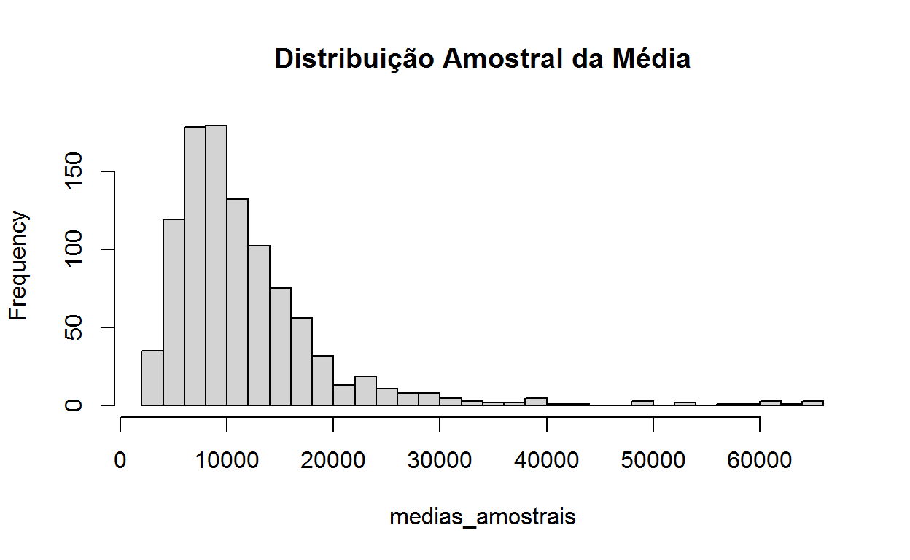

Neste post nosso objetivo é reproduzir análises feitas no IDEA com o objetivo de mostrar os recursos disponíveis no R para a realização de análises típicas de auditoria.
Nosso objetivo neste post é tentar repoduzir as análises feitas por Mark Nigrini em seu workshop na Conferência de Usuários do Software IDEA ocorrido em 1o de outubro de 2020.
As análises podem ser vistas no vídeo disponibilizado pelo autor em seu canal do YouTube.
Os materiais utilizados no vídeo em referência podem ser baixados no link: https://www.dropbox.com/sh/8g8ox3cs8po25tw/AACUfFFtZPUW4g6Co1yBClGwa?dl=0
Os arquivos também estão disponíveis no repositório Usando R em Auditoria no arquivo ForensicAnalytics2nd_IDEA.zip.
Os documentos disponibilizados pelo autor são os seguintes:
Nigrini_FraudNumbers_HandsOn.docxHands-On_Notes.docxSomerville_2013-2016.xlsxSampleMeans.pptxO primeiro documento contém a descrição das análises realizadas e os dados utilizados estão contidos no arquivo indicado no terceiro item. Os outros dois são documentos auxiliares sem maior importância.
Este post refere-se à Parte I. A nossa intenção para uma possível Parte II seria mostrar as análises feitas no IDEA contidas em 3 vídeos disponíveis no YouTube nos quais são mostradas as análises descritas no documento CI202 IDEA Data Analysis Workbook.
Os dados referem-se a pagamentos feitos pela cidade de Somerville nos anos de 2013 a 2016 e possuem os seguintes campos:
ID: identifica de forma única cada pagamento
GovCategory: indica o setor que realizou a transação podendo ser ‘Education’, ‘General Government’, ou ‘Public Works’, as três divisões que fazem pagamentos na cidade de Somerville
VendorName: informa o nome do fornecedor para o qual o pagamento foi feito
Amount: valor do pagamento realizado
CheckDate: data de emissão do cheque de pagamento
Department: nome do departamento para o qual a compra foi realizada
CheckNum: número dos cheques emitidos em numeração sequencial
OrgDescription: detalhes adicionais sobre o departamento
AcctDescription: mais detalhes sobre o tipo de despesa
Na seção seguinte vamos elencar as tarefas requeridas e mostrar como executá-las no R.
As “tarefas” a serem executadas nos dados estão descritas no documento Nigrini_FraudNumbers_HandsOn.docx.
As tarefas solicitadas são as seguintes:
Importe os dados e mostre apenas os 10 primeiros registros das quatro primeiras variáveis (ID, GovCategory, VendorName e Amount).
Vamos carregar os pacotes necessários. Estamos assumindo que todos já estejam instalados.
A importação dos dados pode ser feita da seguinte forma:
somervile <- read_excel("Somerville_2013-2016.xlsx")
Uma rápida olhada nos dados:
glimpse(somervile)
Rows: 55,746
Columns: 10
$ ID <chr> "8730-2013", "15337-2013", "22980-2013", "41~
$ GovCategory <chr> "Public Works", "Education", "General Govern~
$ VendorName <chr> "GLOBAL PETROLEUM CORP.", "MAY INSTITUTE INC~
$ Amount <dbl> 75648.03, 32701.33, 25525.00, 20263.00, 1954~
$ CheckDate <dttm> 2013-01-02, 2013-01-02, 2013-01-02, 2013-01~
$ Department <chr> "DEPARTMENT OF PUBLIC WORKS", "SCHOOL ADMINI~
$ CheckNum <dbl> 555771, 555808, 555875, 2312, 555799, 555803~
$ OrgDescription <chr> "DPW-BLGD&GRNDS ORDINARY MAINT", "SPED-TUITN~
$ AcctDescription <chr> "OIL", "SPED-TUITNPSCH-DW-SPED-P&T", "SITE I~
$ ExpenseType <chr> "Miscellaneous line item", "Education-relate~Mostrar os 10 primeiros registros da base de dados
somervile %>%
select(ID:Amount) %>%
slice_head(n=10)
# A tibble: 10 x 4
ID GovCategory VendorName Amount
<chr> <chr> <chr> <dbl>
1 8730-2013 Public Works GLOBAL PETROLEUM CORP. 75648.
2 15337-2013 Education MAY INSTITUTE INC 32701.
3 22980-2013 General Government SEQUOIA CONSTRUCTION INC 25525
4 4179-2013 General Government CENTERS FOR MEDICARE & MEDICA~ 20263
5 14696-2013 Education MANAGED HEALTH RESOURCES INC 19547
6 14862-2013 General Government MARKINGS INC 17224.
7 2972-2013 Education BOSTON HIGASHI SCHOOL INC 16716.
8 7266-2013 Public Works EAST COAST PETROLEUM STATE 14246.
9 15117-2013 Education MASS.ASSOC.FOR THE BLIND 12458.
10 7704-2013 General Government ELIZABETH A FLEMING 11810.Importados os dados é sempre necessário conferir se os mesmos estão completos, ou seja, se não está faltando nenhum registro, e uma forma clássica de se fazer isso é “totalizar” a base de dados e conferir o valor obtido com os registros contábeis da entidade auditada.
sum(somervile$Amount)
[1] 677014836.63No documento Hands-On_Notes.docx o autor informa que os “Totais de Controle” são: $677,014,836.63 e 55.746 registros. Aparentemente está tudo ok.
Crie um gráfico de período para o valor total pago por mês (Janeiro de 2013 a Dezembro de 2016).
A elaboração de um gráfico de período foi vista no post “Análise Exploratória de Dados e Forensic Analytics”.
somervile %>%
mutate(AnoMes = format(CheckDate, "%Y-%m")) %>%
group_by(AnoMes) %>%
summarise(TotalMes = sum(Amount)) %>%
ggplot(aes(x=AnoMes, y=TotalMes)) +
geom_bar(stat="identity", color="white", fill="lightblue") +
theme_bw() +
theme(axis.text.x = element_text(angle = 90, vjust=0.3, size=5))

Qual mês/ano no período de janeiro de 2013 a dezembro de 2016 possui o maior valor de pagamentos em todo o período?
O gráfico mostra que a resposta a esta questão é junho de 2016. Também seria possível obter esta resposta da seguinte forma:
somervile %>%
mutate(AnoMes = format(CheckDate, "%Y-%m")) %>%
group_by(AnoMes) %>%
summarise(TotalMes = sum(Amount)) %>%
slice_max(TotalMes)
# A tibble: 1 x 2
AnoMes TotalMes
<chr> <dbl>
1 2016-06 46053320.Calcular os valores abaixo relacionados, mostrando-os em oito linhas consecutivas. Arredonde os valores para duas casas decimais.
Valores a serem calculados: soma, quantidade de registros, número de registros faltantes, média, mediana, moda, valor mínimo e valor máximo.
edescr <- somervile %>%
summarise(Soma = sum(Amount),
QtdReg = n(),
Media = mean(Amount),
Mediana = median(Amount),
Minimo = min(Amount),
Maximo = max(Amount))
edescr %>% t() %>% round(2)
[,1]
Soma 677014836.63
QtdReg 55746.00
Media 12144.64
Mediana 504.30
Minimo -16772.40
Maximo 10000000.00Ficaram de fora a moda e o número de registros faltantes. No vídeo, o autor faz o cálculo da moda tabulando a frequência de ocorrência de cada número, ordenando e verificando o número com a maior frequência de ocorrência, algo assim:
# A tibble: 1 x 2
Amount n
<dbl> <int>
1 135 690Embora o R não possua uma função nativa para o cálculo da moda, alguns pacotes fornecem funções para o seu cálculo, como por exemplo a função Mode() do pacote {pracma}.
O número de registros faltantes não foi calculado em razão de não ter uma indicação no vídeo, nem no livro, de como obter esse valor. Mas em princípio se a totalização dos valores na base de dados confere com o que está registrado na contabilidade, então não há registros faltantes.
Uma outra possibilidade seria explorar a numeração sequencial dos cheques para verificar se existe lacunas. Vamos deixar isso para mais adiante.
Este item está faltando no documento disponibilizado pelo autor,
A média dos valores do conjunto de dados (todos os 55.746 pagamentos) é $12.144,64. Você esperaria que o valor médio dos pagamentos de uma amostra de 200 registros seja igual a esse valor? Se não, você esperaria que seja superior ou inferior a $12,144.64
No documento SampleMeans.pptx o autor apresenta um pouco da teoria relacionada à distribuição amostral da média. A leitura do último slide nos permite responder à questão.
A média amostral é um estimador não viesado da média populacional, e para amostras maiores que 30 a distribuição amostral da média aproxima-se bastante de uma distribuição normal independentemente da distribuição populacional da qual a amostra foi retirada. A média dos valores de uma amostra de 200 elementos da população irá ficar próxima à média de todos os valores da base de dados (população). Em algumas amostras essa média será inferior, em outras será superior à média populacional.
Você espera que os dados de pagamento se conformem à Lei de Benford? Porque?
Sim. Em geral os dados contábeis contém as características necessárias a que um conjunto de valores se ajuste à distribuição de dígitos preconizada pela Lei de Benford.
Aplique o teste dos dois primeiros dígitos ao conjunto de dados. Apresente o gráfico do teste realizado.
somervile_bfd <- benford(somervile$Amount, discrete = FALSE)
plot(somervile_bfd,
multiple=FALSE,
except = c("second order", "summation", "mantissa", "chi square", "abs diff", "ex summation"))

Qual o nível de conformidade que os dados apresenetam com a Lei de Benford? Use o desvio médio absoluto (MAD - mean absolute deviation) para o teste de dois dígitos. A resposta deve ser: “conformidade estrita”, “conformidade aceitável”, “conformidade marginalmente aceitável”, ou “não conforme”.
Para responder de forma adequada a essa questão, é necessário conhecer o critério para se fazer a classificação solicitada no exercício. Observando o vídeo
indicado por volta do minuto 15:51 o autor remete para a página 114 de seu livro Forensic Analytics onde consta uma tabela que permite fazer a classificação em função do valor do MAD obtido.
somervile_bfd
Benford object:
Data: somervile$Amount
Number of observations used = 55688
Number of obs. for second order = 29494
First digits analysed = 2
Mantissa:
Statistic Value
Mean 0.4944
Var 0.0861
Ex.Kurtosis -1.2463
Skewness 0.0048
The 5 largest deviations:
digits absolute.diff
1 50 692.07
2 13 415.70
3 15 413.14
4 75 371.66
5 25 322.45
Stats:
Pearson's Chi-squared test
data: somervile$Amount
X-squared = 3585.798622, df = 89, p-value <
0.0000000000000002220446
Mantissa Arc Test
data: somervile$Amount
L2 = 0.0008912906245, df = 2, p-value <
0.0000000000000002220446
Mean Absolute Deviation (MAD): 0.00194393945934
MAD Conformity - Nigrini (2012): Marginally acceptable conformity
Distortion Factor: -1.09234095524
Remember: Real data will never conform perfectly to Benford's Law. You should not focus on p-values!O resultado acima mostra que o conjunto de dados possui uma conformidade marginal à Lei de Benford. (Marginally acceptable conformity)
Identifique os dois primeiros dígitos (10, 11, …, 99) que possuem os três maiores valores no gráfico, ou seja, o par de dígitos que mais excedam a proporção esperada.
O resultado do item anterior nos mostra que os dígitos são: 50, 13 e 15. Não obstante, esses valores diferem dos que são obtidos pelo autor no vídeo: 50, 75 e 78.
Não conseguimos checar a origem da divergência, mas possivelmente deve-se ao critério utilizado para avaliar o distanciamento dos dígitos ao valor esperado.
Identifique os pagamentos “redondos” na base de dados. Um número redondo é definido como sendo um múltiplo de 100.000. Mostre uma tabela com os números redondos identificados mostrando as colunas CheckDate, VendorName, Amount e AcctDescription.
Ordene o resultado de forma decrescente em função da coluna Amount.
Calcule a percentagem de números redondos no total de registros da base de dados. Forneça o resultado no formato xx.xx%.
num_redondo <- somervile %>%
mutate(NumRedondo = if_else(Amount != 0 &
Amount %% 1e5 == 0, 1, 0)) %>%
filter(NumRedondo == 1) %>%
arrange(Amount) %>%
select("CheckDate", "VendorName", "Amount", "AcctDescription")
head(num_redondo)
# A tibble: 6 x 4
CheckDate VendorName Amount AcctDescription
<dttm> <chr> <dbl> <chr>
1 2013-06-26 00:00:00 US BANK 100000 BOND ANTICIPATION NOTE
2 2013-10-23 00:00:00 US BANK 100000 BOND ANTICIPATION NOTE
3 2014-08-13 00:00:00 US BANK 100000 PRINCIPAL ON LNG TRM DEBT
4 2016-06-08 00:00:00 US BANK 200000 BOND ANTICIPATION NOTE
5 2016-06-08 00:00:00 US BANK 300000 BOND ANTICIPATION NOTE
6 2016-06-08 00:00:00 US BANK 300000 BOND ANTICIPATION NOTE Cálculo do percentual de registros relativos a números redondos.
Crie uma nova coluna na base de dados (DayWeek) contendo o dia da semana a que se refere o pagamento (CheckDate). Assim, por exemplo, se a data do cheque é 2/1/2013, que é uma quarta-feira, o valor da nova coluna será “4”.
Exclua as colunas OrgDescription e AcctDescription. Mostre as 8 primeiras linhas do resultado obtido que deve incluir a coluna recém criada DayWeek.
somervile <- somervile %>%
mutate(DayWeek = wday(CheckDate))
somervile %>%
select(-OrgDescription, -AcctDescription) %>%
slice_head(n=8)
# A tibble: 8 x 9
ID GovCategory VendorName Amount CheckDate Department
<chr> <chr> <chr> <dbl> <dttm> <chr>
1 8730-~ Public Wor~ GLOBAL PET~ 75648. 2013-01-02 00:00:00 DEPARTMEN~
2 15337~ Education MAY INSTIT~ 32701. 2013-01-02 00:00:00 SCHOOL AD~
3 22980~ General Go~ SEQUOIA CO~ 25525 2013-01-02 00:00:00 OSPCD ADM~
4 4179-~ General Go~ CENTERS FO~ 20263 2013-01-02 00:00:00 PERSONNEL~
5 14696~ Education MANAGED HE~ 19547 2013-01-02 00:00:00 SCHOOL AD~
6 14862~ General Go~ MARKINGS I~ 17224. 2013-01-02 00:00:00 TRAFFIC A~
7 2972-~ Education BOSTON HIG~ 16716. 2013-01-02 00:00:00 SCHOOL AD~
8 7266-~ Public Wor~ EAST COAST~ 14246. 2013-01-02 00:00:00 DEPARTMEN~
# ... with 3 more variables: CheckNum <dbl>, ExpenseType <chr>,
# DayWeek <dbl>Calcule a quantidade de cheques emitidos em cada dia da semana. Algum cheque cuja data seja sábado ou domingo? Mostre uma tabela com os resultados.
# A tibble: 6 x 2
DayWeek n
<dbl> <int>
1 1 1
2 2 1573
3 3 2394
4 4 48494
5 5 2582
6 6 702Um cheque emitido no domingo.
Elabore um gráfico mostrando a quantidade de pagamentos feitos por trimestre. Comente o resultado obtido.
Nota: No vídeo, por volta do minuto 24:42 o autor apresenta o resultado do teste. A figura abaixo, retirada do vídeo em questão, dá uma ideia do resultado a ser obtido.

somervile %>%
mutate(Trimestre = quarter(CheckDate, type = "date_last")) %>%
group_by(Trimestre) %>%
summarise(QtdRegistros = n()) %>%
ggplot(aes(x=Trimestre, y=QtdRegistros)) +
geom_line(color="blue") +
geom_point(color="blue") +
theme_bw()

Quantos valores negativos existem na base de dados?
sum(somervile$Amount < 0)
[1] 43Encontre todos os pagamentos cujos fornecedores possuam a palavra Christmas em seu nome.
christimas_pay <- somervile %>%
filter(str_detect(VendorName,
coll("Christmas", ignore_case = TRUE)))
christimas_pay
# A tibble: 3 x 11
ID GovCategory VendorName Amount CheckDate Department
<chr> <chr> <chr> <dbl> <dttm> <chr>
1 7742-~ Public Works ELSIE AND~ 9625 2013-01-09 00:00:00 DEPARTMEN~
2 8651-~ Public Works ELSIE AND~ 9900 2013-12-26 00:00:00 DEPARTMEN~
3 9017-~ Public Works ELSIE AND~ 4490 2015-01-14 00:00:00 DEPARTMEN~
# ... with 5 more variables: CheckNum <dbl>, OrgDescription <chr>,
# AcctDescription <chr>, ExpenseType <chr>, DayWeek <dbl>Além das tarefas (ou análises se preferir) apresentadas no documento disponibilizado pelo autor e acima elencadas, vamos aproveitar para adicionar mais algumas que podem ser úteis a quem trabalha com auditoria.
Sorteie aleatoriamente uma amostra de 200 registros (sem reposição) da base de dados.
set.seed(0710)
amostra <- somervile %>%
slice_sample(n=200)
nrow(amostra)
[1] 200Elabore um histograma para evidenciar a distribuição das médias de 1000 amostras de tamanho 200 sorteadas aleatoriamente da base de dados.
medias_amostrais <- replicate(1000,
{
somervile %>%
slice_sample(n=200) %>%
pull(Amount) %>%
mean()
})
hist(medias_amostrais,
breaks = 30,
main = "Distribuição Amostral da Média")

Obtenha os registros da base de dados cujos valores dos pagamentos iniciem com os dígitos “75”. Quantos registros são?
digitos_75 <- somervile %>%
filter(str_detect(Amount, "^75"))
nrow(digitos_75)
[1] 690Quais são os departamentos associados/vinculados a cada “GovCategory”?
# A tibble: 36 x 2
GovCategory Department
<chr> <chr>
1 Public Works DEPARTMENT OF PUBLIC WORKS
2 Education SCHOOL ADMINISTRATION
3 General Government OSPCD ADMINISTRATION
4 General Government PERSONNEL DEPARTMENT
5 General Government TRAFFIC AND PARKING
6 General Government WORKER COMPENSATION
7 General Government COUNCIL ON AGING
8 General Government SOMERVILLE PUBLIC LIBRARY
9 General Government RECREATION AND YOUTH
10 General Government POLICE DEPARTMENT
# ... with 26 more rowsVamos deixar para o leitor/auditor incluir mais 4 colunas indicando o valor gasto nos anos de 2013, 2014, 1015 e 2016. Aí fica simples fazer análises horizontais e verticais.
Os cheques emitidos seguem de fato uma numeração sequencial? Em caso positivo, existem lacunas na numeração?
Vamos fazer um teste geral para identificar se existem números de cheques duplicados na base de dados.
any(duplicated(somervile$CheckNum))
[1] TRUEHummm mal sinal. A base de dados possui mais de um pagamento cujos números de cheques são iguais. Mas talvez a numeração dos cheque reinicie a cada novo ano…Será? Ou a numeração seria única por
Os cheques de mesma numeração possuem a mesma data? Referem-se a a diferentes fornecedores? Como poderíamos obter os registros cujos números de cheques possuem numeração em duplicidade (o regitro “original” e os duplicados)?
Deixaremos para o colega auditor responder a essas questões.
Este conjunto de dados oferece muitas outras oportunidades de análise. Talvez voltemos a ele em uma outra oportunidade.
Nosso objetivo foi mostrar que todas a análises que possam ser feitas em softwares específicos para análise de dados em auditoria podem também ser feitas no R, o que o torna um forte cadidato a tornar-se a ferramenta analítica para a realização de auditorias não só contábil-financeira, como também operacional, de conformidade (aí incluída a auditoria de fraudes) e avaliações de políticas públicas.
Bem, é isso. Espero que tenham gostado.
For attribution, please cite this work as
Silva (2022, Feb. 1). Audinalytics: Reproduzindo Análises Feitas no IDEA - Parte I. Retrieved from audinalytics.netlify.app/posts/2022-02-01-reproduzindo-anlises-feitas-no-idea-parte-i/
BibTeX citation
@misc{silva2022reproduzindo,
author = {Silva, Marcos F.},
title = {Audinalytics: Reproduzindo Análises Feitas no IDEA - Parte I},
url = {audinalytics.netlify.app/posts/2022-02-01-reproduzindo-anlises-feitas-no-idea-parte-i/},
year = {2022}
}